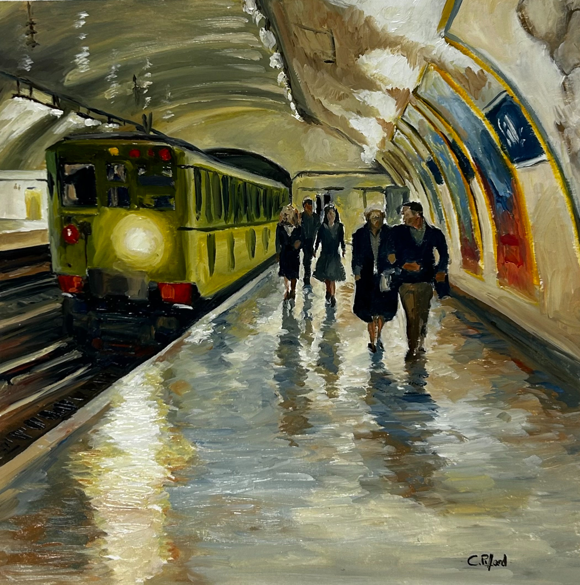
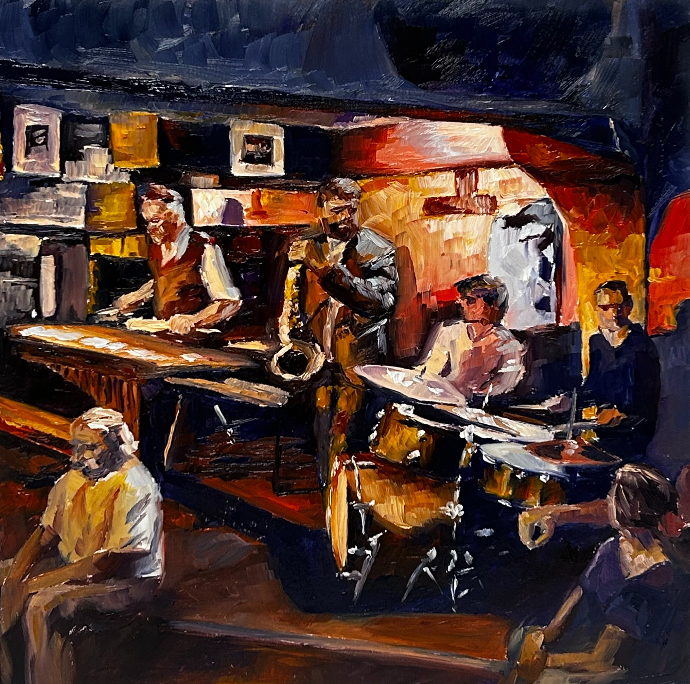
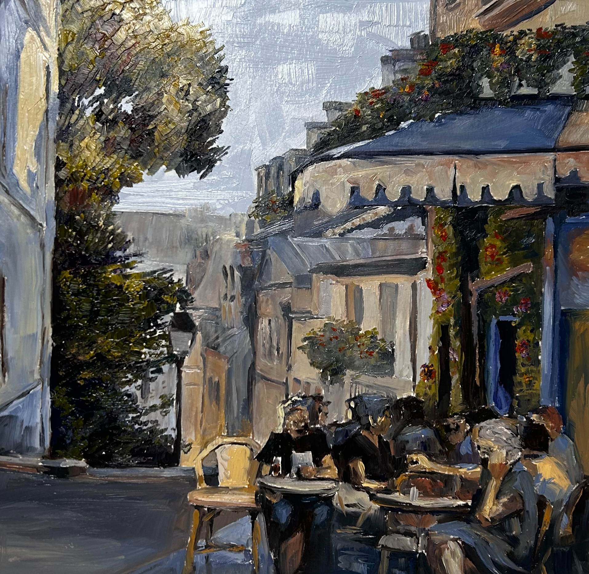
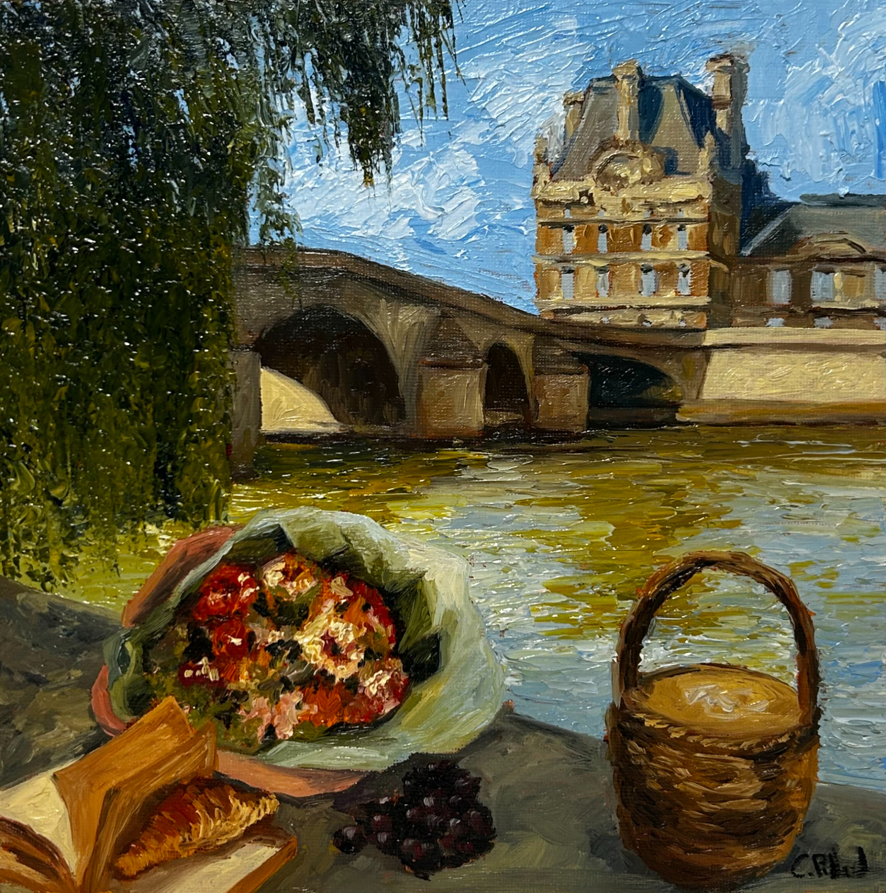
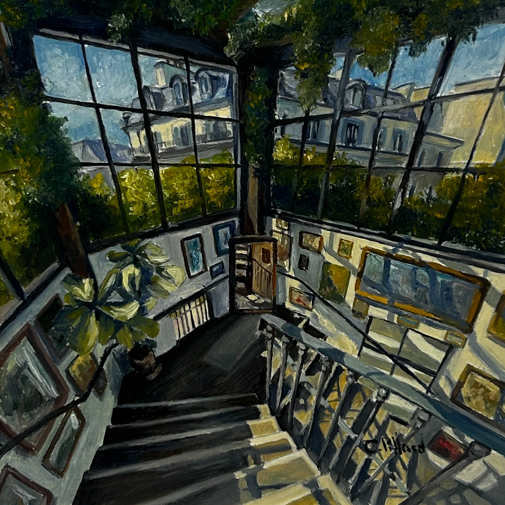
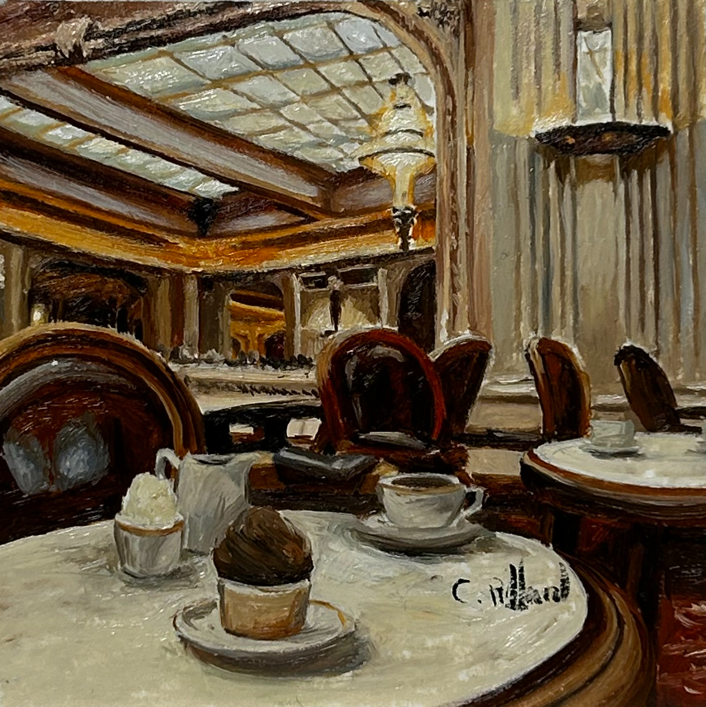
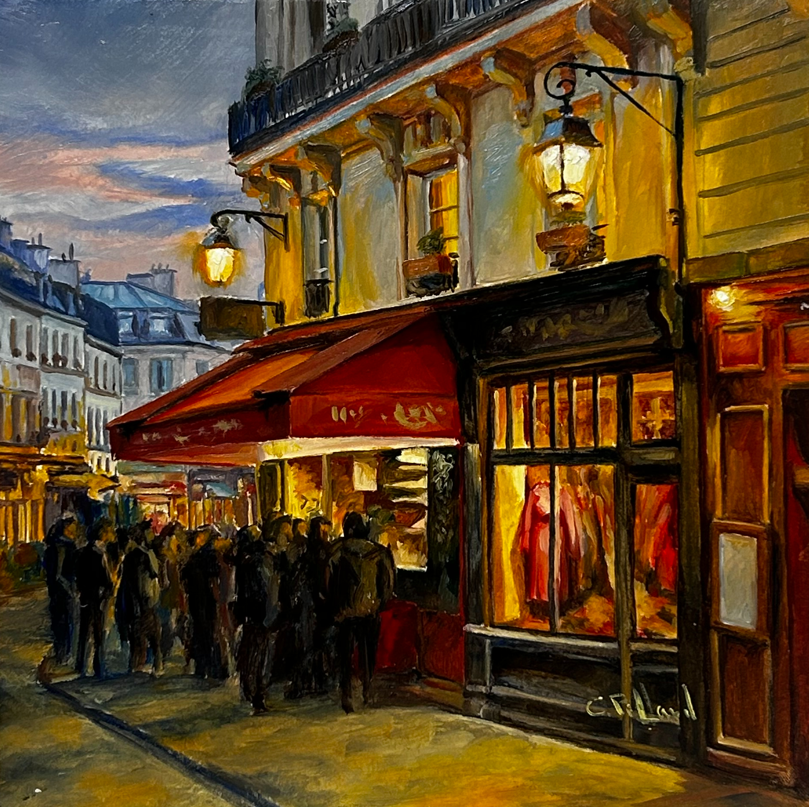
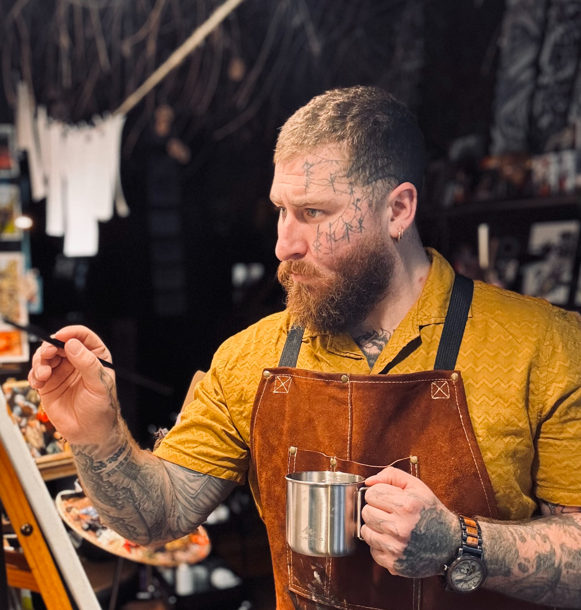

Œuvres
Sélection récente

Vendue

Vendue

Vendue

Vendue

Vendue

Vendue

Vendue

Vendue

Peintre figuratif dont les toiles habitent les galeries Carré d'Artiste de Paris, Montpellier et Toulouse. Cours particuliers de peinture sur invitation, dans son atelier.
Demander un cours
Cédric Piffard est un artiste pluridisciplinaire représenté en exposition permanente par Carré d'Artiste — Paris, Montpellier, Toulouse. Son travail pictural couvre un spectre délibérément large : scènes urbaines, paysages, portraits, natures mortes, sujets contemporains. Huile sur toile, au couteau ou au pinceau, selon ce que le sujet exige.
Parallèlement à la peinture, il tatoue, sculpte, et signe des bandes dessinées et mangas auprès de plusieurs maisons d'édition. Une pratique artistique sans frontières, menée depuis plus de vingt ans avec la même exigence.
Séances individuelles dans l'atelier de Cédric Piffard. Chaque élève est accompagné selon son niveau et ses ambitions — de la première pose de couleur à la maîtrise d'un projet personnel.
Introduction aux fondamentaux : observation, composition, premiers lavis à l'huile. Pour ceux qui n'ont jamais peint ou souhaitent reprendre sur des bases solides.
Travail sur la lumière, la palette chromatique et le développement d'un style personnel. Suivi individualisé entre les séances sur présentation de travaux.
Accompagnement complet dans la réalisation d'une toile de A à Z. Pour les élèves avancés souhaitant produire une œuvre digne d'être exposée.
Séances sur rendez-vous uniquement — places très limitées.






Votre témoignage ici — remplacez ce texte par les retours de vos élèves.
Votre témoignage ici — remplacez ce texte par les retours de vos élèves.
Votre témoignage ici — remplacez ce texte par les retours de vos élèves.
Pour toute demande de renseignement sur les cours, merci de remplir ce formulaire. Cédric répond personnellement à chaque message sous 48 heures.
Merci — Cédric vous répondra très prochainement.